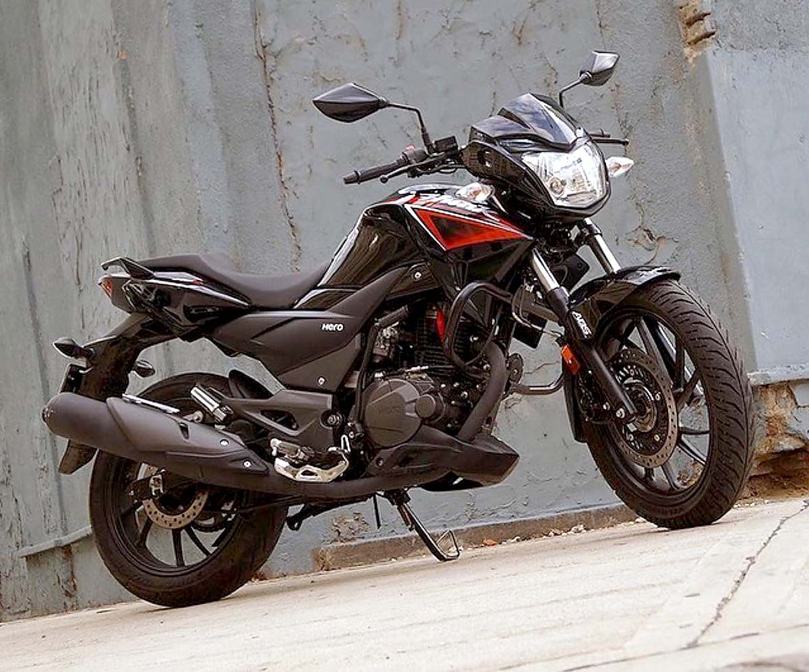

TRUENO MOTORSTAR S.R.L.
¿ Quiénes Somos ?
Con más de 14 años de experiencia en el rubro, Trueno Motorstar SRL es una empresa dedicada a la comercialización de motocicletas, venta de repuestos originales de la marca, venta de accesorios para todos los modelos y servicio de mantenimiento preventivo y correcto a unidades de la marca.
Trueno Motorstar SRL. está conformado por un equipo interdisciplinario de profesionales en ventas, repuestos, mecánica, asesoría en servicios y apoyo al cliente que responde a la satisfacción de nuestros clientes.
Nuestra sede central está ubicada en la ciudad de Cochabamba y dispone de 6 sucursales en el territorio nacional Ubicadas en el departamento de Santa Cruz, La Paz, Tarija, Sucre y Beni (Trinidad y Riberalta).
En el resto del país hay una presencia notable con una amplia cartera de mayoristas y agentes de la marca.

